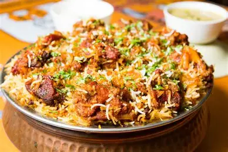

Chennai Thalapakatti Biriyani

Ingridents
- Rice
- Chicken
- Onion
- Tomato
- Mint
Mutton Biriyani Making Process
- ½ kg mutton (cleaned)
- 2 cups basmati rice
- 3 onions (sliced)
- 2 tomatoes (chopped)
- ¾ cup curd
- 2 tbsp ginger-garlic paste
- 3–4 green chillies
- 1 tbsp red chilli powder
- 1 tbsp biryani masala
- ½ tsp turmeric
- Mint and coriander leaves
- Whole spices (bay leaf, cinnamon, cloves, cardamom)
- Oil and Ghee and Salt